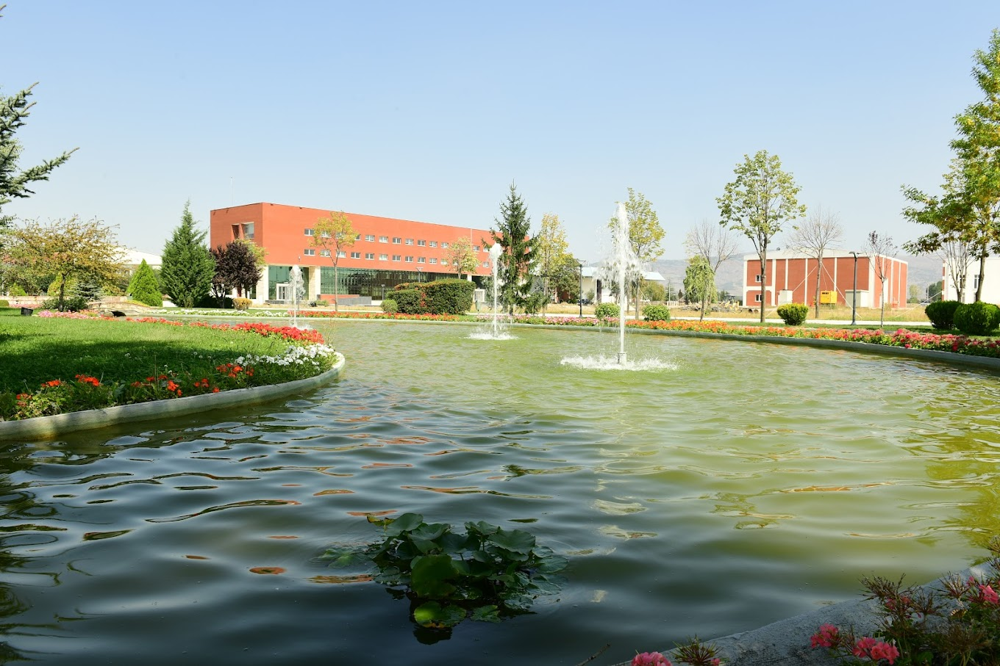

About Us

Established with the Law No. 7141 published in the Official Gazette dated May 18, 2018 and numbered 30425,
Eskişehir Technical University has 5 faculties, 2 Vocational Schools, 1 Vocational School and 3 campuses
located in the center of Eskişehir,which is a city of science, culture and also a youth city. It
consists of the Institute and 4 Research and Application Centers. Eskişehir Technical University works to prepare its students for the future as the most equipped and competitive individuals in creative and dynamic educational environments, with its competent teaching staff, each of whom follows the developments in their field and shares all their time with their students, in its units with a strong infrastructure, where it carries out education and research activities. The operation of the international Hasan Polatkan Airport, located in the 2 Eylül Campus of our university, is carried out by our Faculty of Aviation and Space Sciences. There are international flights to Hasan Polatkan Airport operated by different airline companies on various days of the week.
Administrative Units
Number of Students
15458
Number of Personal
1566
Number of Faculties
5